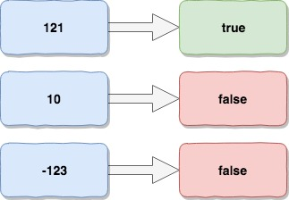

回文数判断 Palindrome Number
题目
判断一个整数是否是回文数。回文数是指正序（从左向右）和倒序（从右向左）读都是一样的整数。
以下为详细说明：
Determine whether an integer is a palindrome. An integer is a palindrome when it reads the same backward as forward.
Example 1:
Input: 121
Output: true
Example 2:
Input: -121
Output: false
Explanation: From left to right, it reads -121. From right to left, it becomes 121-. Therefore it is not a palindrome.
Example 3:
Input: 10
Output: false
Explanation: Reads 01 from right to left. Therefore it is not a palindrome.
Follow up:
Coud you solve it without converting the integer to a string?
思路&题解

回文现象不仅在数字中存在，字符串中也存在，注意题目要求，不同通过转换为字符串来解答问题。
本题和整数翻转有点相似的地方是按位处理数字，但是差异点也有，比如需要区分正负问题，负数不存在回文，因为符号回文后不是一个合法数字。 暴力解法是，将整个数从低位开始，逐一翻转，最后对比一下翻转后的数字和源数字是否相等。
整个解法虽然可行，但是有冗余计算的嫌疑，我分仔细看一下回文规律：
实际上只需要按位处理到数值的中间位，然后对比左右两侧的数字，就可以知道是不是回文数
除此之外，在考虑有没有特殊值需要排除:
- 负数排除
- 个位数是0的多位数排除
- 0本身是回文数
public class Solution {
public boolean isPalindrome(int x) {
// 易错点：特殊值需要提前排除
if(x < 0 || (x%10 == 0 && x != 0)){
return false;
}
int result = 0;
// 易错点：判断位数达到一半
while(x > result) {
result = result*10 + x%10;
x /= 10;
}
// 易错点：对半判断
return result == x || result/10 == x;
}
}
知识点分析
梳理一下这题的几个知识点。
回文数的规律&特殊值 负数排除是比较直观的，但是10的倍数也需要排除。除了0之外，由于整数高位不能是0，因此个位数是0的整数翻转后不是回文数。
如何判断位数的一半
针对字符串，我们可以很简单就感知到长度的1/2，但是针对一个数字，没有长度这个属性维度，如果要判断1/2，那么可以通过间接比较不同位数数值大小的方式来判定。 举例来说，3位的数值肯定大于2位的，因此当按位处理，发现待处理部分已经小于处理部分的翻转值之后，我们可以认为已经达到1/2，或者超过1/2+1位。
抛一个问题，如果不排除个位数是0的数值，那么按位处理逻辑如何保证正确性？
前面判定1/2的逻辑，由于我们不能精确识别1/2，只得出了1/2和1/2+1的位置，因此最后判断对半的时候是有些问题的：
假设x是100，我们处理过后，x=0，result=1时才能打破循坏，此时位数关系已经不满足1/2，或者1/2+1, 如果继续比较，能够命中result/10==x的判断，显然100不是回文数，计算结果是错误的。
如果要精确判定1/2，还有一种办法，通过循环计算，不断的除以10，来计算书数值的位数:
// TODO 需要考虑溢出问题
int num = 10000;
int count = 1;
while ((num / (int)Math.pow(10, count)) > 0) {
count++;
}
System.out.println(num + "=>" + count);